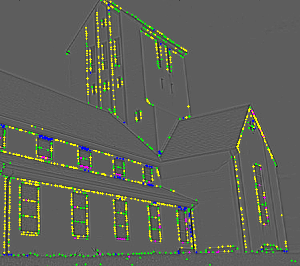
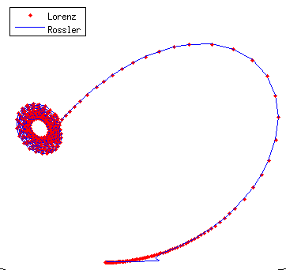

Click here for the script to convert other photos.
Click here for the script to convert other photos.
I am a 3rd year undergraduate in Computer Science and Engineering at Indian Institute of Technology (BHU), Varanasi. My field of interest lies in Artificial Intelligence and its applications, particularly in Computer Vision, Robotics and Neuroscience.
Click here for the script to convert other photos.
Object recognition is the task of identifying the different objects in a photograph. In this project I have currently implemented SIFT in MATLAB, and applied CNN to image classification problem. Future plan is to include context in the object recognition framework

A text summarizer is a software that automatically constructs a concise summary from a given text. The summary so constructed, is supposed to contain all the salient points of the original text. This summarizer is based on an incremental extractive, query specific, graph based, summary generation model. The summarizer is implemented in Python and uses NLTK.

This is a working digital simulation of a simple 8-bit CPU complete with an ALU, Control Unit and conditional branching. All the setup is done on Logisim.

This program is a toy version of a database engine like MySQL, written in C++. The engine follows a language similar to Relational Algebra and processes all tables in memory.

This web app is a feedback portal that allows students to fill their feedbacks for the courses in which they were enrolled and the instructors to view the feedbacks given to their courses. The app is made using Django framework with a MySQL database.

This project illustrates the functional-projective synchronization and anti-synchronization between two chaotic systems, namely Lorenz and Rossler systems.
